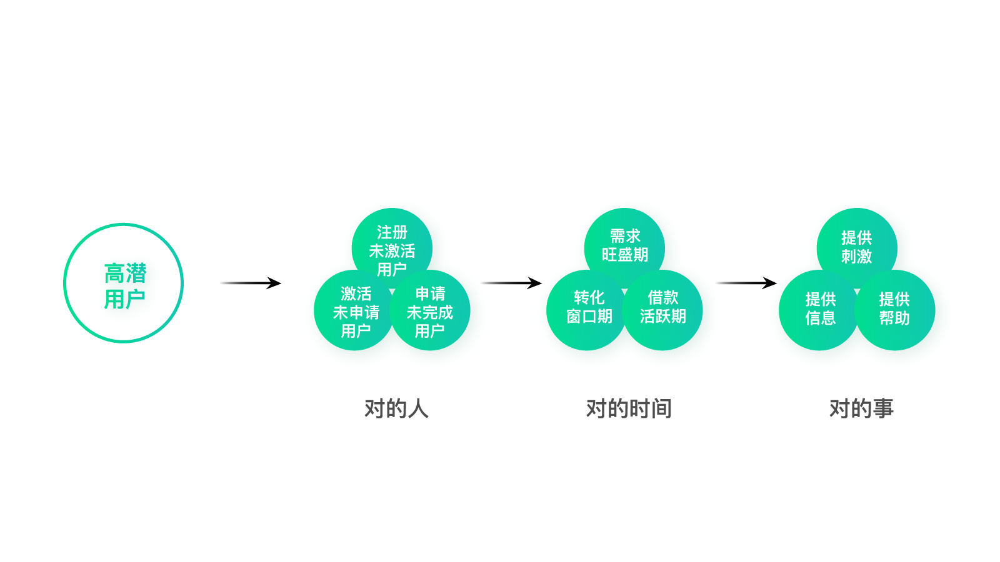

- 00 开篇词 人人都是增长官.md.html
- 01 预习 增长小白如何“弯道超车”？.md.html
- 02 预习 如何理解“增长”？.md.html
- 03 预习 不同职能如何做好增长？.md.html
- 04 预习 做增长如何处理职能间的矛盾？.md.html
- 05 正确目标找不对，天天加班也枉然.md.html
- 06 活学活用北极星指标.md.html
- 07 OKR如何助力增长？.md.html
- 08 不懂用户调研？那就对了！.md.html
- 09 调研目标：在差异性洞察中找到爆破点.md.html
- 10 数据分析：在“花式对比”中发现玄机.md.html
- 11 用户分类：围绕北极星指标细分人群.md.html
- 12 用户访谈：像侦探一样寻找破案线索（上）.md.html
- 13 用户访谈：像侦探一样寻找破案线索（下）.md.html
- 14 提炼用户差异，发现增长契机.md.html
- 15 挖掘产品优势，打破增长瓶颈.md.html
- 16 定位营销差异，抢占用户心智.md.html
- 17 一级方向：找到增长爆破点.md.html
- 18 B端产品如何调研？.md.html
- 19 全局规划增长机会.md.html
- 20 统筹全局的用户增长地图.md.html
- 21 案例解析：定义关键增长指标.md.html
- 22 正负双向洞察，找准切入点.md.html
- 23 二级机会：制定增长策略.md.html
- 24 为一家濒临破产的公司制定增长策略（上）.md.html
- 25 为一家濒临破产的公司制定增长策略（中）.md.html
- 26 为一家濒临破产的公司制定增长策略（下）.md.html
- 27 为什么指标数据怎么优化都不提升？.md.html
- 28 案例解析：打造增长闭环（上）.md.html
- 29 案例解析：打造增长闭环（下）.md.html
- 30 案例解析：唤醒沉睡用户（上）.md.html
- 31 案例解析：唤醒沉睡用户（下）.md.html
- 32 没有分解，就无缘增长.md.html
- 33 四个要点颠覆传统需求文档.md.html
- 34 三级落地：无限场景应用.md.html
- 35 手把手教你设计一次成功的实验（上）.md.html
- 36 手把手教你设计一次成功的实验（下）.md.html
- 37 积少可成多，别针换别墅.md.html
- 38 四级延续：增长组件库案例.md.html
- 39 以用户为中心增长.md.html
- 增长导航图 增长专栏的知识架构是怎样的？.md.html
- 尾声 结束意味着新的开始.md.html
- 预习答疑 你需要一张思维导图吗？.md.html
- 捐赠
31 案例解析：唤醒沉睡用户（下）
你好，我是刘津。
今天我们接上一讲内容，继续介绍唤醒沉睡用户的案例。
上一讲中，我们提出了三大假设：找到“对的人”、在“对的时间”、用“正确的方式”唤醒用户。并且明确了“对的人”，也就是高潜用户及分类。今天我们继续分析对的方式以及对的时间。
找到对的方式：最佳唤醒方式
如何找到最佳唤醒方式呢？还记得用户增长地图里根据洞察提出机会的方式吗？这里也是类似的。
我们之前把用户分成了三类，分别是注册未激活用户、激活未申请用户、申请未完成用户。这三类也刚好代表了三个重要的用户旅程节点。
围绕这三个旅程节点，我们可以结合数据分析及用户访谈，试图洞察出用户沉睡的原因，并提出唤醒方式。
比如对于注册未激活用户，他们在H5营销落地页面上注册了以后，发现还要下载App，可能就望而却步了。因为一些用户手机设备一般，对流量敏感，不想额外耗费太多流量。对于这样的用户，可以推荐用户关注微信公众号，在公众号上也可以实现借款或引导下载App。
而对于激活未申请用户，他们虽然下载了App，但却没有进一步的行为，是因为一些用户没找到合适的借款产品或觉得费率太高。针对这些用户，可以提供更详细的解释说明并尝试发放还款抵用金，或推荐用户一些优惠活动等。
最后是申请未完成用户，他们已经填写了部分信息，但没有走完全部借款流程，很可能是在借款的过程中受到了阻碍，或不符合当前产品的申请条件。如果这个时候有客服提供帮助，就很可能促成转化。当然如果能针对用户常见的问题适当改进界面说明及体验，也会有一定成果。
所以，最佳的唤醒方式，就是针对不同类的人群，提供最适合的方式。
找到对的时间：最佳唤醒时间
找到对的人和对的方式后，如何找到对的唤醒时间呢？其实这相当于对“时间”这个大变量维度做小变量分解，所以我们还是遵循分解从大到小的原则。
首先以年和周为单位，看需求旺盛期。因为借款是有旺季和淡季之分的，每年12月到春节前是贷款旺季。另外，工作日比节假日贷款需求更高。这些结论一方面可以通过数据统计得出，另一方面也可以根据常识得出。
接下来以天为单位，看转化窗口期。也就是看用户有实际行为后的第几天最有可能被唤醒。
我们分析历史数据并做成图表，看用户最后使用产品的第一天、第二天……到第N天的自然转化情况（图片仅做示意，非真实数据）。找到曲线中的“转折点”，也就是没有按照自然规律直线下降的时间节点，尽量把握住这个时间节点唤醒用户。
当然，这里不能盲目地观察数据，还要多和内部同事交流，看某一天转化提升真的是因为自然转化，还是其他团队的同学做了什么事情导致的。
最后，是以小时为单位看借款活跃期。通过数据可以看到，从上午十点到晚九点之前是活跃时间。
这样我们就大致了解了唤醒时间这个“大变量”下面的“小变量”。
通过分解层层细分变量
前面我们已经大致梳理了三大假设，即对的人、对的事、对的时间，以及对应的分解思路。

然而这些只是最基本的，我们还需要在此基础上分解或平行发散更多必要的内容，直到完全可以落地执行。
比如，“提供刺激”表面上已经是在三级假设的基础上做的分解了，但很明显它还可以再进一步分解。因为“提供刺激”这个思路又能衍生出很多种方式，可以提供实际的优惠、也可以用通知的方式鼓励用户回来等等。
再比如“对的人”这里，除了前面分析的用户类型外，还可以再考虑用户来源、用户属性等等，建议越多越好。因为变量越多，做实验就越有可能找到效果好的。100个选择总比10个选择更好。当然在后面实际测试时，我们还是会从中做筛选。
这里我也忍不住想补充上一讲说的那个问题：一级、二级、三级只是个不断向下分解的思路，它们的位置不是绝对的。如果一个三级项目够复杂，那可能不仅用到一级、二级的思路，还能再向下做很多级分解。当你面临一个问题不知道该如何下手时，就可以按照这个思路不断分解到最小颗粒度，直到解决问题为止。
正交试验大幅提升实验效率
现在我们要进行到实验环节了，但是有个很大的问题，就是这么多的变量组合，这要实验多少次才能穷尽啊？
这和前面的优化流程或者界面的实验难度，可完全不是一个量级的。我们最终的目的是从所有种可能中找出一种最佳组合。
这里为你介绍正交试验的思路，它可以大幅减少实验次数。正交试验设计也叫DOE（Design of Experiment），它是由罗纳德·费雪（Sir Ronald Aylmer Fisher）在20世纪初提出的，最早用于工业设计，后来由日本统计学家田口玄一发扬光大。
如图，假设现在有3个维度，每个维度下有3个细分变量，那我们一共需要实验3×3×3=27次。但是统计学家发现，其实并不需要进行完所有的实验才能找到效果最好的组合，只要选择其中有代表性的变量组合进行实验就够了。因为通过过往的统计经验，不具代表性的变量组合效果并不好，可以直接忽略。
图中绿色的节点就是有代表性的点，它们的特征是均匀分散、齐整可比。在网上可以找到正交表，通过正交表就能够查到具有代表性的点，如果不明白可以询问公司里的数据分析人员。通过正交试验，原来需要测试27次，现在只要测9次就可以了。这大大提升了实验效率。
最终，我们仅做了9次实验，就从若干变量组合中找到了一组最佳变量组合。使用这组变量组合唤醒用户，唤醒率比之前提升1倍，唤醒成本比之前降低59%，试验次数比之前减少了89%。
当然，如果有条件的话，也可以用机器学习的方式分析最佳变量组合。
精益闭环思路唤醒沉睡用户
在项目一开始的时候，我就问项目成员，我们是否可以用精益闭环的思路来做这个项目。当时我心里其实也没有底，毕竟我们之前从来没接触过正式的运营以及数据分析工作，也没有用精益闭环的思路处理过这么复杂的问题。但大家最终还是愿意抱着试一试的心态去探索，没想到成功地帮助我们解决了问题，并取得了用户数量快速增长的效果。
这充分说明了精益闭环的通用性，它可以解决各种职能的问题；也说明了正确的思路不亚于传统的专业、技能、经验。
也许在不远的将来，不会再有这么多职能的区分，大家都能够用类似的思想去做事情。职能变得不再重要，因为技术和数据越来越受到重视，它们可以替代大量的简单重复性工作。剩下的是能够提出策略的人以及少量的执行者。
思考题
继续总结这个案例，看你是否能通过它深入理解精益闭环的思路，并应用到自己现在的工作中？
欢迎把你的思考和疑问通过留言分享出来，与我和其他同学一起讨论。如果你觉得有所收获，也欢迎把文章分享给你的朋友。
© 2019 - 2023 Liangliang Lee. Powered by gin and hexo-theme-book.